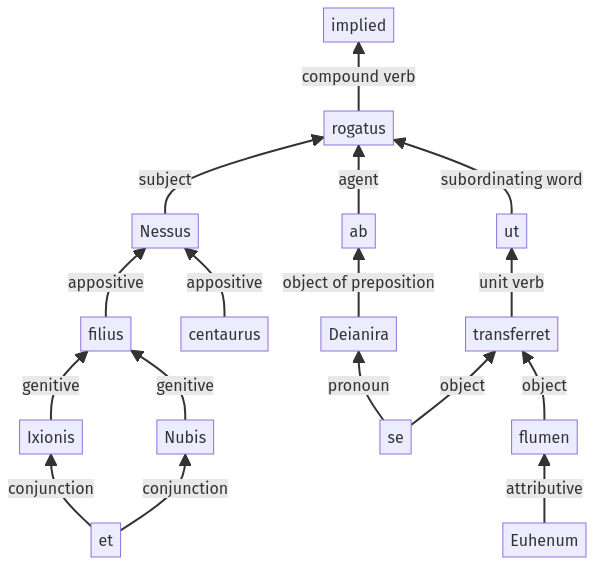

Hyginus, Fabuleer, 34pr.1.1-34pr.1.14a
33pr.3.20-33pr.3.26a | 34pr.1.15-34pr.1.21a
Sentence 465
34pr.1.1-34pr.1.14a
Nessus Ixionis et Nubis filius, centaurus, rogatus ab Deianira ut se flumen Euhenum transferret:
1 Nessus Ixionis et Nubis filius centaurus rogatus ab Deianira
2 ut se flumen Euhenum transferret
Nessus Ixionis et Nubis filius, centaurus, rogatus ab Deianira ut se flumen Euhenum transferret:
Highlighting:
- connecting words
- unit verb
- subject
- object
Color code:
- independent clause (level 1, transitive verb)
- subordinate clause (level 2, transitive verb)
